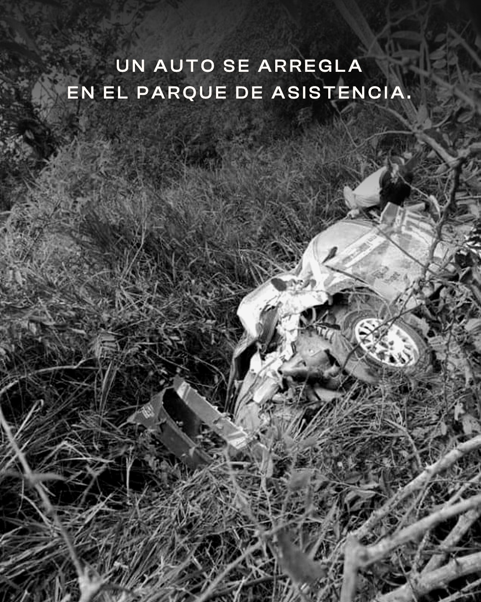
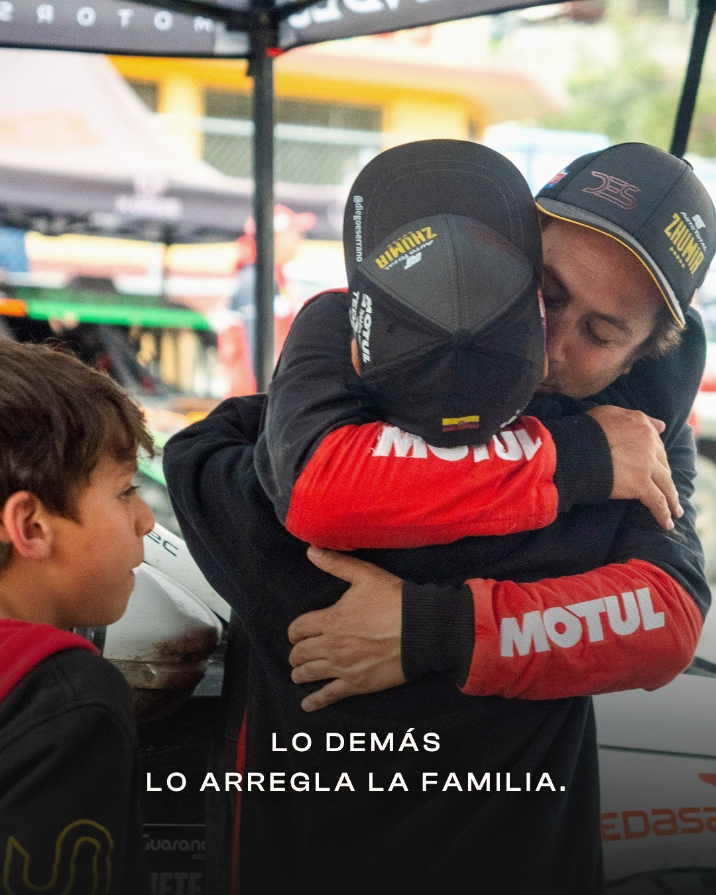
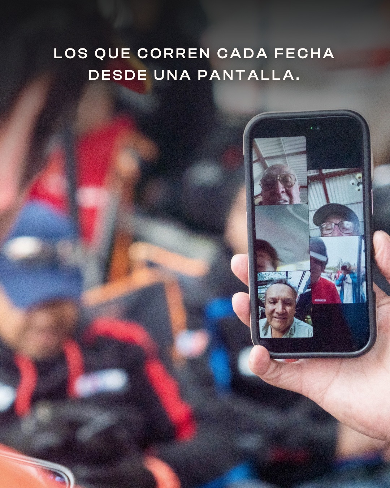
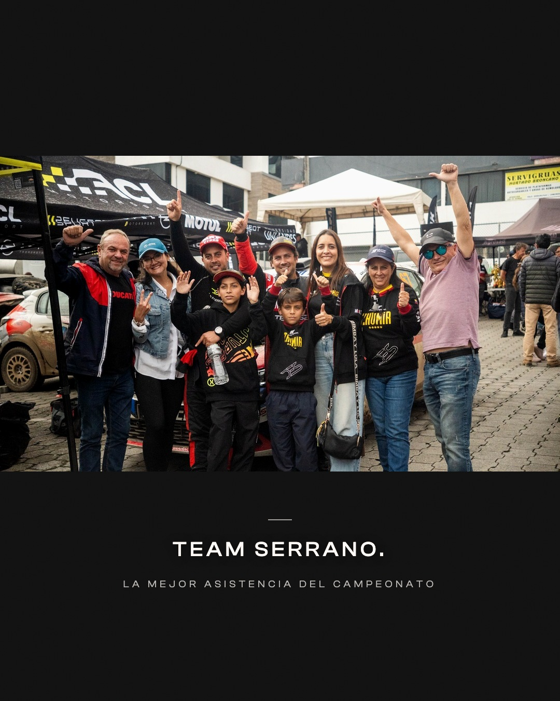
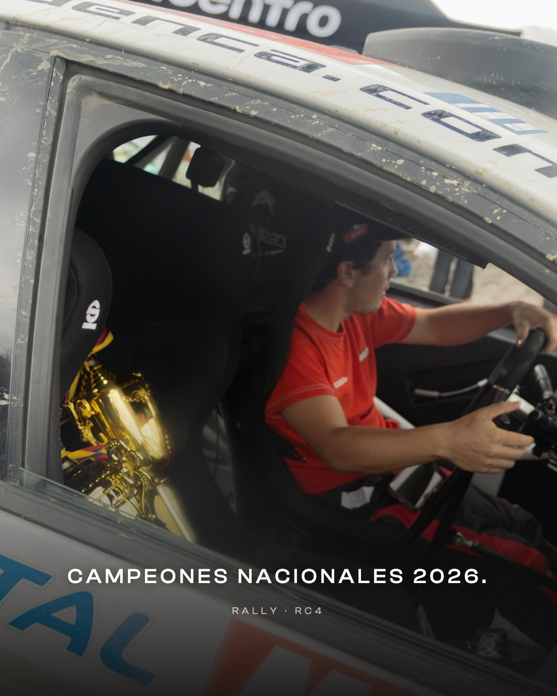
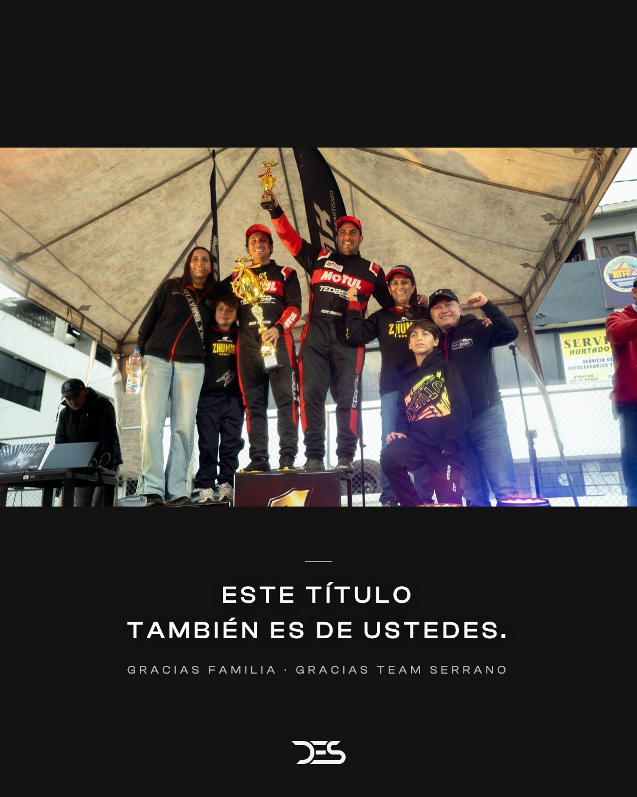

Propuesta · Noviembre 2026
Propuesta · Noviembre 2026Gracias familia.
Gracias Team Serrano.
Diego, esta es la propuesta para un segundo post: un agradecimiento especial y exclusivo a tu familia. Empieza con el video de Piñas que no alcanzó a salir en el carrusel anterior y termina con la familia en el podio de Guaranda.
La idea central: un auto se arregla en el parque de asistencia; lo demás lo arregla la familia.






Copy del post
Desliza el carrusel o usa las flechas. Los slides 1 y 4 son video; activa el sonido para escucharlo como en Instagram.
Por qué un segundo post
Levantarse siempre vale la pena. Del barranco de Piñas al título, con gracias al equipo y a todos los que apoyaron.
Hay cosas que no se arreglan solo. Sin el apoyo de la familia, ese regreso no habría sido posible. Este post muestra cuánto pesó la familia en todo el proceso.
Fecha sugerida: lunes 30 de noviembre o martes 1 de diciembre. Así dejamos respirar el post anterior y no repetimos el tema seguido.
Lámina por lámina
- Video · Rally de Piñas, 2024. El auto sale de la neblina, pasa junto a la cámara y se pierde en la curva. Quien graba corre al borde y se ve el precipicio. Blanco y negro, sonido real, sin texto encima.
- Foto · El auto en el barranco. "Un auto se arregla en el parque de asistencia."
- Foto · El abrazo con Juan Felipe. "Lo demás lo arregla la familia." Desde aquí todo va en color.
- Video · Los abrazos al final de la carrera. Con los niños, con tu esposa y con tu familia, en Guaranda. "Los que esperan en cada final de tramo."
- Foto · La videollamada. "Los que corren cada fecha desde una pantalla."
- Foto · El grupo celebrando. "Team Serrano. La mejor asistencia del campeonato."
- Foto · El trofeo en el auto. "Campeones nacionales 2026. Rally · RC4."
- Foto · La familia en el podio. "Este título también es de ustedes. Gracias familia · Gracias Team Serrano."
Para confirmar
- Lámina 7. ¿Eres tú quien está al volante con el trofeo? El texto va en tu voz.
- Lámina 5. ¿Está bien mostrar a la familia de la videollamada?
- Foto del barranco. Si tienes la foto original en mejor calidad, la cambiamos para que se vea más nítida.
- Colaboración. ¿Lo publicamos en colaboración con @juanfelipeserrano?